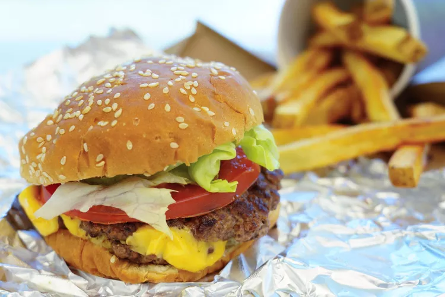

Burger

Description
My usual recipe for a burger is designed to be convenient yet tasty. Like the picture I often include chips (fries), but the result needn't resemble a Five Guys meal, as nice as those are.
Apart from bread, patty, cheese, onion and condiments, my special inclusion is jalapeños; which can supplant pickle. My omissions usually include tomato and lettuce.
Ingredients
- Bread
- Beef patty
- Cheese
- Onion
- Jalapeños
- Ketchup
- Mayonnaise
- Mustard
- Hot sauce
- Salt
Steps
- Set the beef patty to cook.
- Arrange all other ingredients.
- Turn patty and/or wait for it to finish cooking.
- Toast the bread for one minute or however long it takes to add some warmth and minimal texture and resistance.
- Add ketchup and hot sauce to one slice of bread, and mayonnaise and mustard to the other.
- Place a slice of cheese on one slice of bread.
- Place the cooked patty atop this slice of cheese.
- Place your slice of onion atop the patty.
- Place the japaleño slices atop the onion.
- Place the other slice of bread atop this stack.
- Eat... eat the burger.